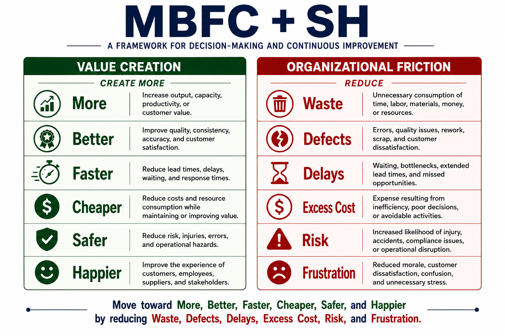
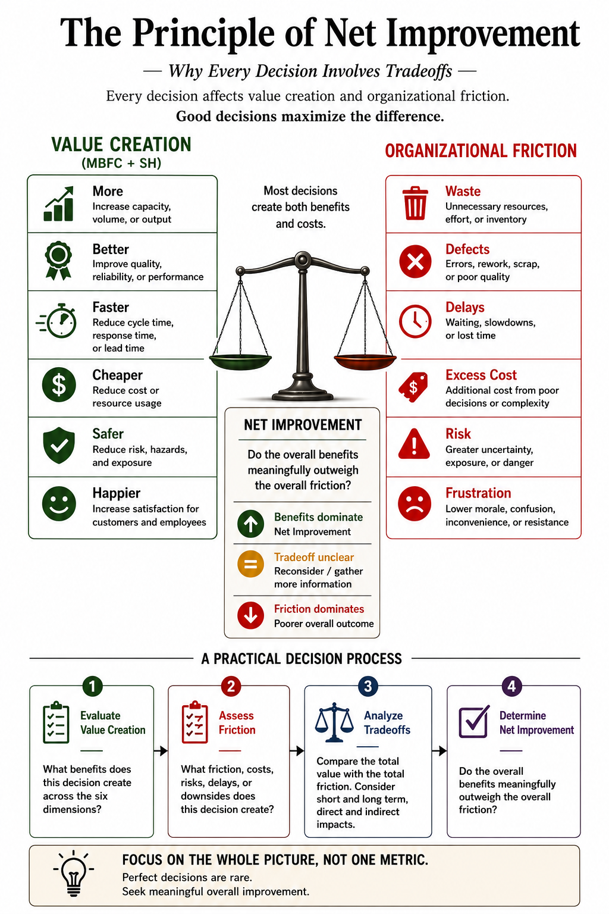
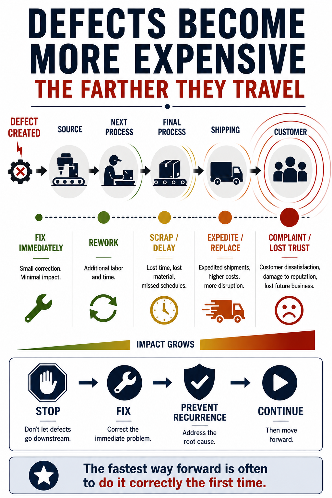
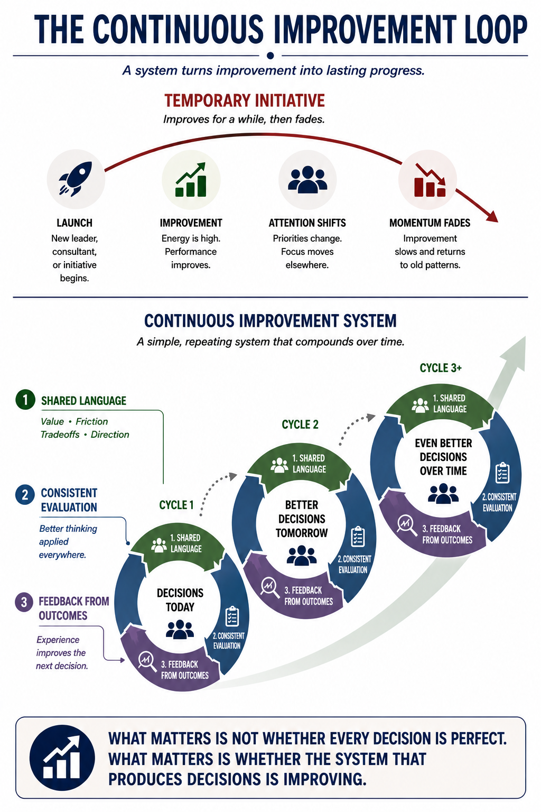
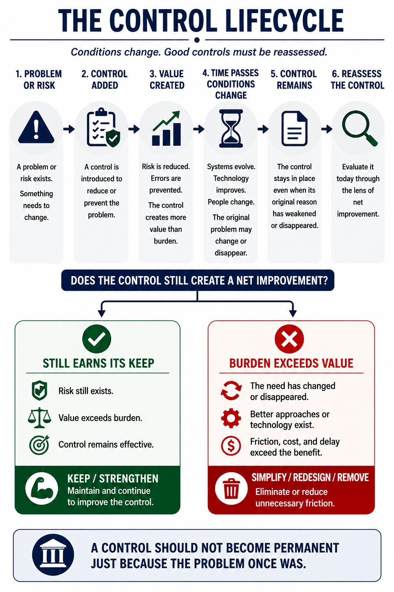

Improvement Is More Than a Better Local Result
Organizations make changes constantly: processes are modified, controls are added, suppliers are selected, systems are implemented, and investments are approved. Each decision promises some form of improvement. Yet a decision can reduce cost while increasing defects, improve control while creating delay, or increase speed while adding risk.
The Improvement Compass provides a common language for seeing the whole consequence. It defines six forms of value creation—More, Better, Faster, Cheaper, Safer, and Happier—and balances them against six forms of organizational friction: Waste, Defects, Delays, Excess Cost, Risk, and Frustration.
The objective is not to maximize one outcome at the expense of everything else. The objective is net improvement: a better organization as a whole.
Value Creation and Organizational Friction
MBFC + SH gives different improvement disciplines a shared language: six ways to create value and six forms of friction that can consume or undermine it.



Benefits Must Be Considered With Friction
Most decisions create both benefits and costs. Net improvement asks whether the overall benefits meaningfully outweigh the friction created across the organization.

The MBFC + SH Decision Test
Before acting, examine the expected benefits, the friction the decision may create, who receives the benefits, and who bears the friction.

The Compounding Cost of Delay
A delay rarely remains isolated. Waiting can cascade into higher costs, schedule disruption, downtime, customer impact, risk, defects, and frustration.

Build a System That Learns
Improvement becomes durable when organizations use a shared language, evaluate decisions consistently, and learn from outcomes. The goal is not perfect decisions; it is a system that produces better decisions over time.

Put the ideas to work.
These are the kinds of questions the book is designed to make easier to ask—and harder to ignore.
- What value are we actually trying to create?
- What new friction could this decision introduce?
- Are we reducing cost—or shifting cost somewhere less visible?
- Who benefits, who absorbs the burden, and for how long?
- What would tell us that the change is not working as expected?
- Considering the whole system, does this create net improvement?
Use the Language With the Methods You Already Know.
MBFC + SH is not a replacement for Lean, Six Sigma, Theory of Constraints, safety, quality, customer experience, or operational excellence. It gives those disciplines a shared way to ask whether a change creates net improvement across the organization.
Who This Book Is For
Leaders, managers, supervisors, operations teams, improvement professionals, and anyone responsible for changing how work gets done.
Ideas Tested Against Real Decisions
A small sample of the organizations, events, and decisions examined throughout the book.
The Improvement Compass
Read the book or use the companion resources to put its ideas to work.